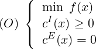

To use the functions described in this section, you should include pnl/pnl_optim.h.
Consider the minimization problem
| min x | CT x | ||
| s.t. | Aineq x ≤Bineq | ||
| Aeq x = Beq | |||
| xmin ≤x ≤xmax |
To solve such a linear problem, we provide a wrapper to the LPSolve library ( http://lpsolve.sourceforge.net).
int pnl_optim_linprog (const PnlVect *C, const PnlMat *A_ineq, const PnlVect
*B_ineq, const PnlMat *A_eq, const PnlVect *B_eq, const PnlVect *x_min, const PnlVect
*x_max, int debug, PnlVect *xopt, double *fobj_opt)
Description This function has the following arguments:
C The coefficients of the linear objective function.
A_ineq The l.h.s matrix of the inequality constraints. Can be NULL.
B_ineq The r.h.s vector of the inequality constraints. The lengh of B_ineq must match the number of rows of A_ineq.
A_eq The l.h.s matrix of the equality constraints. Can be NULL.
B_eq The r.h.s vector of the equality constraints. The lengh of B_eq must match the number of rows of A_ineq.
x_min The lower bound on x. If NULL, it means all the components of x must be non negative.
x_max The upper bound on x. If NULL, it means +Infinity for all the components.
debug TRUE or FALSE. If TRUE some debugging details are printed.
xopt The argmin of the problem.
fobj_opt The value of the obective funtion at the optimum xopt
The function returns OK or FAIL.
int pnl_optim_linprog_sp (const PnlSpMat *C, const PnlSpMat *A_ineq, const
PnlVect *B_ineq, const PnlSpMat *A_eq, const PnlVect *B_eq, const PnlVectInt
*index_min, const PnlVect *x_min, const PnlVectInt *index_max, const PnlVect *x_max,
int debug, PnlVect *xopt, double *fobj_opt)
Description This function has the following arguments:
C The coefficients of the linear obejctive function, given as a sparse matrix with a single column.
A_ineq The l.h.s matrix of the inequality constraints. Can be NULL.
B_ineq The r.h.s vector of the inequality constraints. The lengh of B_ineq must match the number of rows of A_ineq.
A_eq The l.h.s matrix of the equality constraints. Can be NULL.
B_eq The r.h.s vector of the equality constraints. The lengh of B_eq must match the number of rows of A_ineq.
index_min The indices of the variables with a lower bound constraint. The corresponding lower bound is given in x_min
x_min The lower bound on x. If NULL, it means all the components of x must be non negative. Can be NULL. For non specified variables, the default lower bound is 0.
index_max The indices of the variables with an upper bound constraint. The corresponding lower bound is given in x_max. Can be NULL.
x_max The upper bound on x. If NULL, it means +Infinity for all the components. For non specified variables, the default upper bound is +Infinity..
debug TRUE or FALSE. If TRUE some debugging details are printed.
xopt The argmin of the problem.
fobj_opt The value of the obective funtion at the optimum xopt
The function returns OK or FAIL.
A standard Constrained Nonlinear Optimization problem can be written as:
|
|
where the function f : ℝn →ℝ is the objective function, cI : ℝn →ℝmI are the inequality constraints and cE : ℝn →ℝmE are the equality constraints. These functions are supposed to be smooth.
In general, the inequality constraints are of the form cI(x) = . The vector l and u are the lower and upper bounds on the variables x and g(x) and the non linear inequality constraints.
Under some conditions, if x ∈ ℝn is a solution of problem (O), then there exist a vector λ = (λI,λE) ∈ℝmI ×ℝmE, such that the well known Karush-Kuhn-Tucker (KKT) optimality conditions are satisfied:
 |
l is known as the Lagrangian of the problem (O), λI and λE as the dual variables while x is the primal variable.
To solve an inequality constrained optimization problem, ie mE = 0, we provide the following function.
int pnl_optim_intpoints_bfgs_solve (PnlRnFuncR*func,
PnlRnFuncRm*grad_func, PnlRnFuncRm*nl_constraints, PnlVect *lower_bounds,
PnlVect *upper_bounds, PnlVect *x_input, double tolerance, int iter_max, int
print_inner_steps, PnlVect *output)
Description This function has the following arguments:
func is the function to minimize f.
grad is the gradient of f. If this gradient is not available, then enter grad=NULL. In this case, finite difference will be used to estimate the gradient.
nl_constraints is the function g(x), ie the non linear inequality constraints.
lower_bounds are the lower bounds on x. Can be NULL if there is no lower bound.
upper_bounds are the upper bounds on x. Can be NULL if there is no upper bound.
x_input is the initial point where the algorithm starts.
tolerance is the precision required in solving (P).
iter_max is the maximum number of iterations in the algorithm.
print_algo_steps is a flag to decide to print information.
x_output is the point where the algorithm stops.
The algorithm returns an int, its value depends on the output status of the algorithm. We have 4 cases:
0: Failure: Initial point is not strictly feasible.
1: Step is too small, we stop the algorithm.
2: Maximum number of iterations reached.
3: A solution has been found up to the required accuracy.
The last case is equivalent to the two inequalities:

where cI(x) . * λI where ’.*’ denotes the term by term multiplication.
The first inequality is known as the optimality condition, the second one as the
complementarity condition.
Remarks Our implementation requires the initial point x0 to be strictly feasible, ie: c(x0) > 0. The algorithm tries to find a pair (x, λ) solving the Equations (P), but this does not guarantee that x is a global minimum of f on the set {c(x) ≥ 0}.